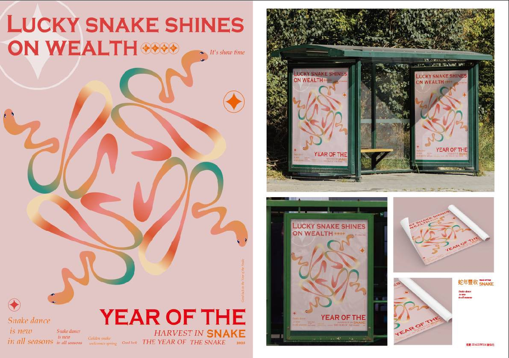
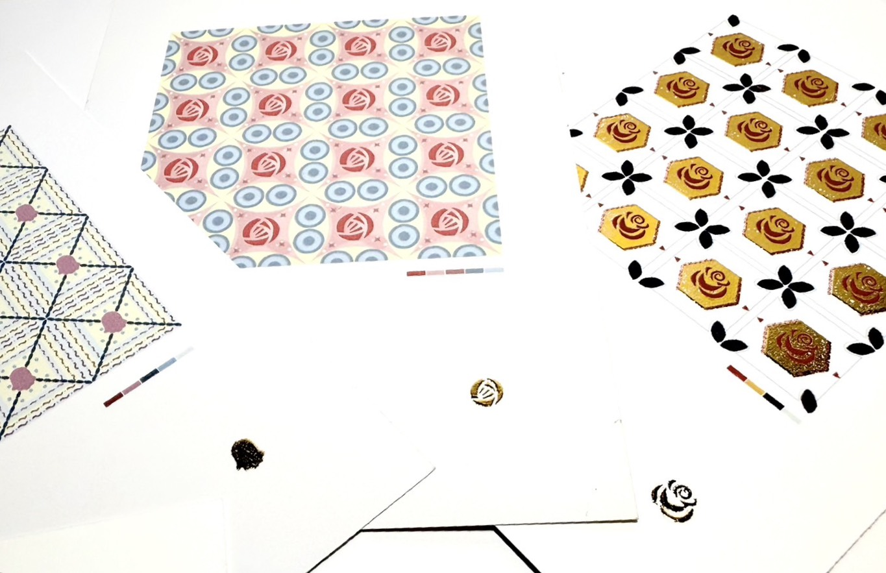

◆ 專案：紫色色彩模特
專案簡介：這是我第一次當上模特，利用紫色的主題去裝造我們的造型。
設計方式：只使用紫色去拍攝。
歡迎來到我的小星球！
專案簡介：這是我第一次當上模特，利用紫色的主題去裝造我們的造型。
設計方式：只使用紫色去拍攝。
本作品採用神祕優雅的紫色調，融合柔和的暖膚色，呈現高貴、深邃的視覺意象：

專案簡介：蛇年豐收。
設計方式：利用一條蛇複製成一個圖案，再把文字以及輔助圖形編排成多種海報。
本作品採用溫暖、典雅的宮廷風配色，呈現浪漫與高貴的視覺氛圍：

專案簡介：本專案以現代幾何圖形為骨架，融合古典玫瑰花卉元素，創作出富有韻律感的四方連續印花設計。透過繁複的圖案堆疊與色彩搭配，展現出具古典美感與現代感並存的視覺藝術。
設計方式：利用幾何圖形與輔助圓形進行精密編排，將玫瑰花卉解構並規律地重複排列，達到視覺上的和諧與延伸感。
本作品採用復古優雅的宮廷風配色，藉由和諧的冷暖色調交織，呈現極具韻律感的視覺氛圍：
我的信箱：Tulinamariana2503@gmail.com
我的電話：0905069549